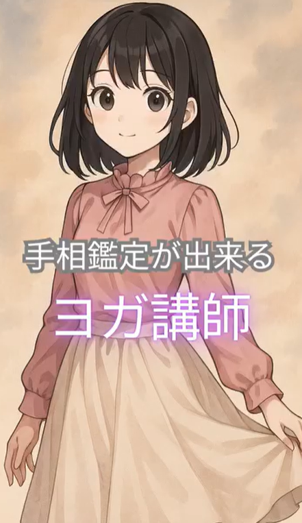

'/%3E%3Ccircle cx='60' cy='55' r='30' fill='%23D0C8C0'/%3E%3Cellipse cx='38' cy='30' rx='14' ry='18' fill='%23D0C8C0' stroke='%23F0B0B8' stroke-width='2'/%3E%3Cellipse cx='38' cy='32' rx='8' ry='12' fill='%23F0B0B8'/%3E%3Cellipse cx='82' cy='30' rx='14' ry='18' fill='%23D0C8C0' stroke='%23F0B0B8' stroke-width='2'/%3E%3Cellipse cx='82' cy='32' rx='8' ry='12' fill='%23F0B0B8'/%3E%3Ccircle cx='48' cy='52' r='5' fill='%232D1B4E'/%3E%3Ccircle cx='72' cy='52' r='5' fill='%232D1B4E'/%3E%3Ccircle cx='50' cy='50' r='2' fill='white'/%3E%3Ccircle cx='74' cy='50' r='2' fill='white'/%3E%3Cellipse cx='60' cy='60' rx='3' ry='2' fill='%23F0B0B8'/%3E%3Cpath d='M54 64 Q60 70 66 64' stroke='%232D1B4E' stroke-width='1.5' fill='none'/%3E%3Cpath d='M30 45 Q60 -5 90 45' fill='url(%23bg)'/%3E%3Ccircle cx='60' cy='12' r='5' fill='%23C9A84C'/%3E%3Crect x='28' y='42' width='64' height='6' rx='3' fill='url(%23bg)' stroke='%23C9A84C' stroke-width='1'/%3E%3Ctext x='45' y='35' fill='%23C9A84C' font-size='8'%3E%E2%9C%A7%3C/text%3E%3Ctext x='65' y='28' fill='%23C9A84C' font-size='6'%3E%E2%98%85%3C/text%3E%3Ccircle cx='95' cy='85' r='8' fill='%23D0C8C0'/%3E%3Crect x='88' y='85' width='6' height='20' rx='3' fill='url(%23bg)'/%3E%3C/svg%3E)
ご案内します！
流年法 × ヨガ × 手相鑑定
ヨガで整え、手相で「時」を知る。
投資の勝負時も、人生の転機も。
生命線が教える「流年法」で、
あなたの本来の運命を精密算出。
SCROLL
'/%3E%3Ccircle cx='70' cy='62' r='32' fill='%23D0C8C0'/%3E%3Cellipse cx='46' cy='35' rx='14' ry='18' fill='%23D0C8C0'/%3E%3Cellipse cx='46' cy='37' rx='8' ry='12' fill='%23F0B0B8'/%3E%3Cellipse cx='94' cy='35' rx='14' ry='18' fill='%23D0C8C0'/%3E%3Cellipse cx='94' cy='37' rx='8' ry='12' fill='%23F0B0B8'/%3E%3Ccircle cx='58' cy='58' r='5' fill='%232D1B4E'/%3E%3Ccircle cx='82' cy='58' r='5' fill='%232D1B4E'/%3E%3Ccircle cx='60' cy='56' r='2' fill='white'/%3E%3Ccircle cx='84' cy='56' r='2' fill='white'/%3E%3Cellipse cx='70' cy='66' rx='3' ry='2' fill='%23F0B0B8'/%3E%3Cpath d='M64 70 Q70 76 76 70' stroke='%232D1B4E' stroke-width='1.5' fill='none'/%3E%3Cpath d='M38 52 Q70 0 102 52' fill='url(%23bg2)'/%3E%3Ccircle cx='70' cy='18' r='5' fill='%23C9A84C'/%3E%3Crect x='36' y='49' width='68' height='6' rx='3' fill='url(%23bg2)' stroke='%23C9A84C' stroke-width='1'/%3E%3Ctext x='55' y='40' fill='%23C9A84C' font-size='8'%3E%E2%9C%A7%3C/text%3E%3Ctext x='78' y='33' fill='%23C9A84C' font-size='6'%3E%E2%98%85%3C/text%3E%3Ccircle cx='110' cy='90' r='6' fill='%23D0C8C0'/%3E%3Crect x='108' y='78' width='4' height='14' rx='2' fill='%23D0C8C0'/%3E%3C/svg%3E)
'/%3E%3Ccircle cx='40' cy='38' r='20' fill='%23D0C8C0'/%3E%3Cellipse cx='28' cy='24' rx='9' ry='12' fill='%23D0C8C0'/%3E%3Cellipse cx='28' cy='25' rx='5' ry='8' fill='%23F0B0B8'/%3E%3Cellipse cx='52' cy='24' rx='9' ry='12' fill='%23D0C8C0'/%3E%3Cellipse cx='52' cy='25' rx='5' ry='8' fill='%23F0B0B8'/%3E%3Ccircle cx='34' cy='36' r='3' fill='%232D1B4E'/%3E%3Ccircle cx='46' cy='36' r='3' fill='%232D1B4E'/%3E%3Ccircle cx='35' cy='35' r='1.2' fill='white'/%3E%3Ccircle cx='47' cy='35' r='1.2' fill='white'/%3E%3Cellipse cx='40' cy='42' rx='2' ry='1.5' fill='%23F0B0B8'/%3E%3Cpath d='M22 32 Q40 2 58 32' fill='url(%23bg3)'/%3E%3Ccircle cx='40' cy='12' r='3' fill='%23C9A84C'/%3E%3Crect x='20' y='30' width='40' height='4' rx='2' fill='url(%23bg3)' stroke='%23C9A84C' stroke-width='.8'/%3E%3Ctext x='33' y='25' fill='%23C9A84C' font-size='5'%3E%E2%9C%A7%3C/text%3E%3Ccircle cx='56' cy='52' r='5' fill='%23D0C8C0'/%3E%3C/svg%3E)
'/%3E%3Ccircle cx='60' cy='55' r='30' fill='%23D0C8C0'/%3E%3Cellipse cx='38' cy='30' rx='14' ry='18' fill='%23D0C8C0'/%3E%3Cellipse cx='38' cy='32' rx='8' ry='12' fill='%23F0B0B8'/%3E%3Cellipse cx='82' cy='30' rx='14' ry='18' fill='%23D0C8C0'/%3E%3Cellipse cx='82' cy='32' rx='8' ry='12' fill='%23F0B0B8'/%3E%3Ccircle cx='48' cy='50' r='6' fill='%232D1B4E'/%3E%3Ccircle cx='72' cy='50' r='6' fill='%232D1B4E'/%3E%3Ccircle cx='50' cy='48' r='2.5' fill='white'/%3E%3Ccircle cx='74' cy='48' r='2.5' fill='white'/%3E%3Ccircle cx='46' cy='52' r='1' fill='%23C9A84C'/%3E%3Ccircle cx='70' cy='52' r='1' fill='%23C9A84C'/%3E%3Cellipse cx='60' cy='58' rx='3' ry='2' fill='%23F0B0B8'/%3E%3Cpath d='M55 62 Q60 66 65 62' stroke='%232D1B4E' stroke-width='1.5' fill='none'/%3E%3Cpath d='M30 43 Q60 -5 90 43' fill='url(%23bg4)'/%3E%3Ccircle cx='60' cy='10' r='5' fill='%23C9A84C'/%3E%3Crect x='28' y='40' width='64' height='6' rx='3' fill='url(%23bg4)' stroke='%23C9A84C' stroke-width='1'/%3E%3Ctext x='45' y='33' fill='%23C9A84C' font-size='8'%3E%E2%9C%A7%3C/text%3E%3Ctext x='67' y='26' fill='%23C9A84C' font-size='6'%3E%E2%98%85%3C/text%3E%3Ccircle cx='100' cy='90' r='7' fill='%23D0C8C0'/%3E%3Crect x='98' y='90' width='4' height='15' rx='2' fill='url(%23bg4)'/%3E%3Ccircle cx='20' cy='90' r='7' fill='%23D0C8C0'/%3E%3Crect x='18' y='90' width='4' height='15' rx='2' fill='url(%23bg4)'/%3E%3C/svg%3E)

'/%3E%3Ccircle cx='45' cy='40' r='22' fill='%23D0C8C0'/%3E%3Cellipse cx='30' cy='22' rx='10' ry='14' fill='%23D0C8C0'/%3E%3Cellipse cx='30' cy='24' rx='6' ry='9' fill='%23F0B0B8'/%3E%3Cellipse cx='60' cy='22' rx='10' ry='14' fill='%23D0C8C0'/%3E%3Cellipse cx='60' cy='24' rx='6' ry='9' fill='%23F0B0B8'/%3E%3Ccircle cx='38' cy='38' r='3.5' fill='%232D1B4E'/%3E%3Ccircle cx='52' cy='38' r='3.5' fill='%232D1B4E'/%3E%3Ccircle cx='39' cy='37' r='1.3' fill='white'/%3E%3Ccircle cx='53' cy='37' r='1.3' fill='white'/%3E%3Cellipse cx='45' cy='44' rx='2' ry='1.5' fill='%23F0B0B8'/%3E%3Cpath d='M40 47 Q45 52 50 47' stroke='%232D1B4E' stroke-width='1.2' fill='none'/%3E%3Cpath d='M24 32 Q45 5 66 32' fill='url(%23bg5)'/%3E%3Ccircle cx='45' cy='12' r='3.5' fill='%23C9A84C'/%3E%3Crect x='22' y='30' width='46' height='4' rx='2' fill='url(%23bg5)' stroke='%23C9A84C' stroke-width='.7'/%3E%3C/svg%3E)

'/%3E%3Ccircle cx='45' cy='42' r='22' fill='%23D0C8C0'/%3E%3Cellipse cx='30' cy='24' rx='10' ry='14' fill='%23D0C8C0'/%3E%3Cellipse cx='30' cy='26' rx='6' ry='9' fill='%23F0B0B8'/%3E%3Cellipse cx='60' cy='24' rx='10' ry='14' fill='%23D0C8C0'/%3E%3Cellipse cx='60' cy='26' rx='6' ry='9' fill='%23F0B0B8'/%3E%3Ccircle cx='38' cy='40' r='3.5' fill='%232D1B4E'/%3E%3Ccircle cx='52' cy='40' r='3.5' fill='%232D1B4E'/%3E%3Ccircle cx='39' cy='39' r='1.3' fill='white'/%3E%3Ccircle cx='53' cy='39' r='1.3' fill='white'/%3E%3Cellipse cx='45' cy='46' rx='2' ry='1.5' fill='%23F0B0B8'/%3E%3Cpath d='M38 50 Q45 56 52 50' stroke='%232D1B4E' stroke-width='1.5' fill='none'/%3E%3Cpath d='M24 34 Q45 7 66 34' fill='url(%23bg7)'/%3E%3Ccircle cx='45' cy='14' r='3.5' fill='%23C9A84C'/%3E%3Crect x='22' y='32' width='46' height='4' rx='2' fill='url(%23bg7)' stroke='%23C9A84C' stroke-width='.7'/%3E%3Cpath d='M38 68 L45 62 L52 68' stroke='%23D0C8C0' stroke-width='3' fill='none' stroke-linecap='round'/%3E%3C/svg%3E)